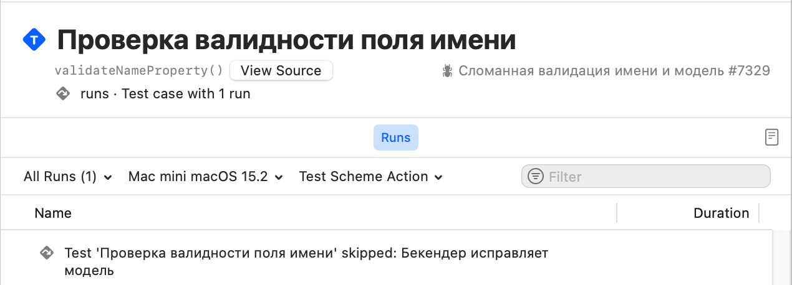
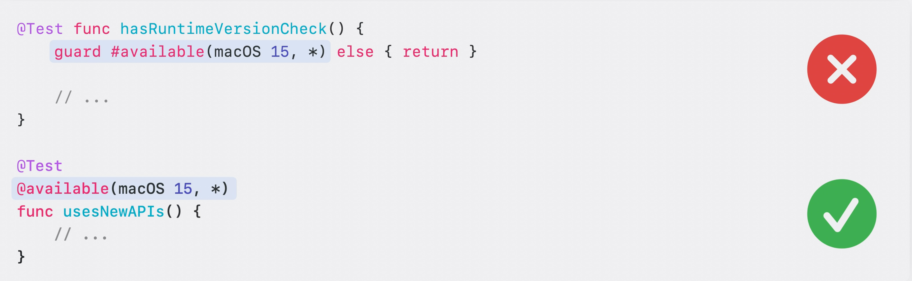

@Test(…)
Глава про макрос @Test разделена на 4 сценария:
Здесь ты столкнешься с распространенными проблемами в тестировании и узнаешь как их решить. Помимо этого, я расскажу о тонкостях работы макроса.
Условие или runtime condition
Во-первых, тесты с условием. Некоторые тесты должны выполняться только при определённых обстоятельствах — например, на конкретных устройствах или в определённом окружении (environments).
Для этого, ты можешь применить кортеж условия (ConditionTrait) .enabled(if: ...):
@Test(.enabled(if: Backport.isRemoteVersion))
func backportVersion() async {
// ...
}
Ты передаешь некоторое условие, которое будет оцениваться перед запуском теста и если условие ложно, тест помечается как пропущенный и не выполняется.
→ Test 'backportVersion()' skipped
В других случаях необходимо полностью отключить выполнение теста (чтобы тест никогда не выполнялся). Для этого используй кортеж .disabled(...):
@Test(.disabled("Известный баг, отключаем до фикса #PR-3781"))
func fetchFeatureFlag() async {
// ...
}
→ Test 'fetchFeatureFlag()' skipped: Известный баг, отключаем до фикса #PR-3781
Использование кортежа .disabled(...) является предпочтительнее комментирования тела функции, поскольку в закомментированном состоянии — тело функции компилируется:
// Избегайте такого способа отключения теста
@Test("Закомментирую на время фикса #PR-3781")
func fetchAnotherFlag() {
// try await Task(priority: .background) {
// ...
// }
}
Тебе может показаться, что одного комментария недостаточно и по-хорошему нужно указать причину отключения: баг, ожидание PR (пулл реквеста) или иное условие. Что ж, в дополнение к комментарию ты можешь использовать кортеж .bug(...), чтобы явно указать на проблему:
@Test(
"Проверка валидности поля именя",
.disabled("Бекендер исправляет модель"),
.bug("https://github.com/issue/7329", "Сломанная валидация имени и модель #7329")
)
func validateNameProperty() async throws {
// ...
}
Данный баг будет отображаться в отчете и вы сможете перейти по ссылке, которая ассоциируется с ним:

Когда необходимо запустить тест только на конкретной версии ОС (операционной системы), можешь использовать атрибут @available(...), чтобы указать на какой версии доступен тест.
Атрибут @available(...) позволяет понимать, что у теста есть условие, связанное с версией операционной системы и точнее отражать это в результатах.
@Test
@available(macOS 15, *)
func usesNewAPIs() {
// ...
}
Избегайте использования проверки доступности с помощью макросов #available и #unavailable:
// ❌ Избегайте использования проверки доступности в рантайме с помощью #available и #unavailable
@Test
func hasRuntimeVersionCheck() {
guard #available(macOS 15, *) else { return }
// ...
}
<!-- TODO: Пример с unavailable -->
// ✅ Используйте атрибут @available для функции или метода
@Test
@available(macOS 15, *)
func usesNewAPIs() {
// ...
}

Атрибут @available(...) используется для обозначения доступности типа данных или функции, а макрос #available используется когда необходимо выполнить часть кода только в определенной версии ОС.
Общие характеристики или теги
Давай обсудим, как ты можешь объединять тесты, которые имеют общие свойства, даже если они находятся в разных типах данных или файлах. Swift Testing поддерживает создание пользовательских тэгов для тестов.
note
Тег (или тэг) — это ключевое слово для обозначения общих свойств в тестах.
В моём проект я уже использовал теги. Найти их можно в навигационном меню Xcode, а именно в Test Navigator снизу.
Чтобы увидеть тесты, к которым применены теги, ты можешь переключиться в новый режим группировки — по тегам.
Давайте применим тег к одному из тестов, которые мы писали ранее. Для этого мы добавим кортеж .tags(...) в атрибут @Test:
// пример кода
Этот тест проверяет логику форматирования данных. В этом проекте уже есть другой тест, связанный с форматированием,
поэтому давайте добавим тэг formattingData и к этому тесту.
После применения, тэг отобразится в Test Navigator под соответствующим тэгом. Я написал еще один тест, который также проверяет форматирование данных, и добавлю его сюда. Поскольку оба теста связаны с форматированием информации о видео, давайте сгруппируем их в поднабор.
Теперь мы можем переместить тег formattingData на уровень @Suite, чтобы тэг применялся ко всем тестам в этом @Suite. Далее можно удалить теги из каждого отдельного метода с атрибутом @Test, так как он (кто они?) наследуются.
Вы можете ассоциировать теги с тестами, которые имеют общие черты. Например, вы можете применить общий тег ко всем тестам, которые проверяют определенную функцию или подсистему. Это позволяет запускать все тесты с конкретным тегом, фильтровать их в Test Report и даже видеть аналитические данные, например, когда несколько тестов с одним и тем же тегом начинают падать.
Теги могут применяться к тестам в разных файлах, типам данных, макросу @Suite и даже использоваться в нескольких проектах.
При использовании Swift Testing предпочтительнее использовать теги вместо имен тестов для их включения или исключения из тестового плана. Чтобы добиться наилучших результатов, всегда выбирайте наиболее подходящий тип свойства для каждой ситуации. Не все сценарии должны использовать теги. Например, если вы хотите выразить условие выполнения во время выполнения, используйте .enabled(if ...), как мы обсуждали ранее.
В главе про @Test я не буду рассказывать о том как создать собсвенный тэг и в целом об этом кортеже, только совместное использование. Узнать о макросе @Tag можно здесь.
Аргументы
Последний рабочий процесс, который я хочу показать, — мой любимый. Повторение тестов с разными аргументами каждый раз. Вот пример того, почему это может быть полезно. В этом проекте есть несколько тестов, которые проверяют количество континентов, упомянутых в различных видео. Каждый из них следует схожей схеме: создается новая библиотека видео, затем выполняется поиск видео по названию, после чего макрос #expect используется для проверки количества континентов, упомянутых в видео.
Эти тесты работают, но они слишком однотипны, и чем больше видео мы добавляем для тестирования, тем сложнее их поддерживать из-за дублирующегося кода. Кроме того, при использовании этого подхода нам приходится давать каждому тесту уникальное имя функции, но эти имена трудно читать, и они могут не совпадать с названием тестируемого видео. Вместо этого мы можем записать все эти тесты как один, используя функцию, называемую параметризованным тестированием. Давайте преобразуем этот первый тест в параметризованный.
Первый шаг — добавить параметр в его сигнатуру. Как только мы это сделаем, появляется ошибка, сообщающая, что необходимо указать аргументы для передачи в тест. Исправим это. Для начала включим названия только трех видео. Мне нравится разбивать аргументы на несколько строк, чтобы их было легче читать, но вы можете форматировать их так, как вам удобно. Последний шаг — заменить название видео, которое ищется, на переданный аргумент. Поскольку этот тест теперь охватывает несколько видео, давайте обобщим его название. Полное название этого теста теперь включает метку параметра. Однако мы все еще можем задать ему отображаемое имя или другие свойства, если захотим, передав их перед аргументами.
Теперь давайте запустим тест и посмотрим, как он пройдет. Отлично! Тест успешно завершился, и в Test Navigator для каждого отдельного видео отображается его собственная запись, как если бы это были отдельные тесты. Такая структура упрощает добавление новых аргументов и расширение охвата тестов. Давайте добавим в этот список все оставшиеся видео, а также пару новых. На этом этапе мы можем удалить старые функции с аннотацией @Test, так как они больше не нужны. Запустим тест еще раз и убедимся, что он все еще проходит.
Хм, похоже, одно из новых видео, добавленных ближе к концу, вызывает ошибку. Нажав на аргумент, мы можем увидеть подробности и узнать, какое ожидание не было выполнено. Чтобы разобраться в проблеме, можно повторно запустить тест с отладчиком, но я бы предпочел перезапустить только тот аргумент, который вызвал сбой, чтобы сэкономить время. В Xcode 16 теперь можно запустить отдельный аргумент, нажав на его кнопку запуска в Test Navigator. Но прежде чем это сделать, давайте установим точку останова в начале теста.
Теперь перезапустим его. Имя видео, отображаемое в отладчике — “Scotland Coast”, поэтому мы знаем, что тест выполняется именно с тем аргументом, который нас интересует. Отсюда мы можем продолжить отладку и выяснить причину сбоя.
Концептуально параметризованный тест похож на один тест, который выполняется несколько раз с использованием цикла for…in. Вот пример: в нем есть массив videoNames, который перебирается для выполнения теста. Однако использование цикла for…in имеет свои недостатки. Параметризованное тестирование позволяет четко видеть детали каждого отдельного аргумента в результатах. Аргументы можно запускать повторно независимо для точной отладки. Кроме того, их можно выполнять более эффективно, запуская каждый аргумент параллельно, что ускоряет получение результатов.
Параметризованные тесты можно использовать даже в более сложных сценариях, например для тестирования всех комбинаций двух наборов входных данных.
Когда вы видите тест, использующий этот шаблон, лучше преобразовать его в параметризованную тестовую функцию. Просто добавьте параметр в функцию, избавьтесь от цикла for…in, переместите аргументы в аннотацию @Test — и готово!
Теперь поговорим о том, как Swift Testing и XCTest соотносятся друг с другом. Если вы уже писали тесты на XCTest, то, возможно, задаетесь вопросом, как эта новая система тестирования сравнивается с XCTest и как можно перенести существующие тесты. Swift Testing имеет некоторые сходства с XCTest, но также обладает важными отличиями, которые стоит учитывать. Давайте сравним три основные составляющие: тестовые функции, ожидания и наборы тестов.
В XCTest тестами считаются методы, название которых начинается с «test». В Swift Testing для явного обозначения тестов используется атрибут @Test, что исключает двусмысленность. Swift Testing поддерживает больше видов функций: вы можете использовать как методы экземпляра, так и статические или глобальные функции. В отличие от XCTest, Swift Testing поддерживает «черты» для указания информации как для каждого теста, так и для всего набора. Кроме того, Swift Testing использует другой подход к параллелизации: тесты выполняются в процессе с использованием Swift Concurrency и поддерживают физические устройства, такие как iPhone и Apple Watch.
Ожидания в этих двух системах сильно различаются. XCTest использует концепцию утверждений (assertions) и множество функций, начинающихся с XCTAssert. Swift Testing подходит к этому иначе: в нем всего два основных макроса — #expect и #require. Вместо множества специализированных функций вы можете передавать обычные выражения и операторы языка в #expect или #require. Например, для проверки равенства можно использовать оператор двойного равенства, а для сравнения значений — оператор «больше». Также легко можно использовать противоположный оператор, чтобы отрицать любое ожидание.
Завершение теста после сбоя реализовано по-разному. В XCTest нужно установить свойство continueAfterFailure в значение false, чтобы тест завершался после первой неудачной проверки. В Swift Testing любое ожидание можно сделать обязательным, заменив #expect на #require, и оно вызовет ошибку при сбое. Это позволяет выбирать, какие ожидания должны завершать тест, и даже менять их поведение по ходу теста.
Что касается типов наборов тестов, XCTest поддерживает только классы, которые должны наследоваться от XCTestCase. В Swift Testing можно использовать структуры, актеры или классы. Причем структуры предпочтительны, так как они используют семантику значений и предотвращают ошибки, вызванные непреднамеренным совместным использованием состояния. Наборы тестов можно явно обозначить с помощью атрибута @Suite, хотя это необязательно для любого типа, содержащего тестовые функции или вложенные наборы. Атрибут требуется только для указания отображаемого имени или других характеристик.
Для выполнения логики перед каждым тестом в XCTest используются методы setUp, а в Swift Testing — инициализатор типа, который может быть асинхронным или генерировать ошибки. Если нужно выполнить логику после каждого теста, можно использовать деинициализатор. Деинициализаторы могут использоваться только для актеров и классов, что является основной причиной выбора ссылочного типа вместо структуры для набора тестов.
В Swift Testing можно группировать тесты в подгруппы через вложенные типы. Тесты XCTest и Swift Testing могут сосуществовать в одной цели, поэтому при миграции можно делать это постепенно, без необходимости создавать новую цель. При переносе нескольких методов XCTest с похожей структурой их можно объединить в один параметризованный тест, как мы обсуждали ранее. Для классов XCTest с единственным методом теста можно перенести его в глобальную функцию с атрибутом @Test.
Имя тестов больше не обязательно должно начинаться с «test». Продолжайте использовать XCTest для тестов, которые используют API автоматизации пользовательского интерфейса, такие как XCUIApplication, или API для тестирования производительности, такие как XCTMetric, так как они не поддерживаются в Swift Testing. Также XCTest необходимо для тестов, которые можно писать только на Objective-C. Однако вы можете использовать Swift Testing для написания тестов на Swift, которые проверяют код, написанный на другом языке.
Избегайте вызова функций утверждений XCTest в тестах Swift Testing и наоборот — макроса #expect в тестах XCTest. Обязательно ознакомьтесь с разделом «Migrating a test from XCTest» в нашей документации. Там много деталей о переводе утверждений, обработке асинхронных условий ожидания и многом другом.
Мы рассмотрели функции Swift Testing и показали несколько способов их использования. Это только начало для этого нового пакета, и я рад, что он будет продолжать развиваться в сообществе. Swift Testing — это проект с открытым исходным кодом, размещенный на GitHub. Вскоре он перейдет в недавно объявленную организацию swiftlang.
Пакет работает на всех операционных системах Apple, поддерживающих Swift Concurrency, а также на Linux и Windows. Важным улучшением является единая кодовая база для всех этих платформ! Это обеспечивает более согласованное поведение тестов при переключении между платформами и лучшее функциональное соответствие.
Swift Testing интегрирован в основные инструменты и среды разработки Swift, включая Swift Package Manager в командной строке, а также Xcode 16 и VS Code с последними версиями расширения для Swift.
Давайте рассмотрим работу Swift Testing в командной строке. Вот простой пакет, который я создал с использованием шаблона New Package в Xcode 16. Мы можем запустить тесты этого пакета из Терминала, введя команду swift test. Это запускает как тесты XCTest, так и Swift Testing. В консоли отображаются результаты прохождения и сбоев с использованием цветного вывода, а также подробные сообщения об ошибках, аналогичные тем, что показываются в Xcode.
У Swift Testing есть процесс предложений новых функций, и мы обсуждаем его развитие на Swift Forums. Мы приглашаем вас принять участие: предлагать или обсуждать функции, улучшать документацию или сообщать об ошибках. Все вклады приветствуются!
Итак, это Swift Testing. Используйте его мощные функции, такие как ожидания и параметризованное тестирование, чтобы улучшить качество вашего кода; настраивайте тесты с помощью черт и присоединяйтесь к нам на GitHub и форумах, чтобы влиять на будущее этого пакета.
Тонкости
Последний параграф познакомит тебя с особенностями использования макроса @Test, которые доступны при детальном чтении исходного кода, который реализует сам макрос. За это отвечает структура данных TestDeclarationMacro.
@Test("Как определить, функция для теста изолирована на глобальном акторе ?")
@MainActor
func determineGlobalActor() async {
await MainActor.run {}
}
// How do we call a function if we don't know whether it's async or
// throws? Yes, we know if the keywords are on the function, but it could
// be actor-isolated or otherwise declared in a way that requires the use of
// await without us knowing. Abstract away the need to know by invoking
// the function along with an expression that always needs try and one
// that always needs await, then discard the results of those expressions.
//
// We may also need to call init() (although only for instance methods.)
// Since we can't see the actual init() declaration (and it may be
// synthesized), we can't know if it's noasync, so we assume it's not.
//
// If the function is noasync, we will need to call it from a synchronous
// context. Although async is out of the picture, we still don't know if
// try is needed, so we do the same tuple dance within the closure.
// Calling the closure requires try, hence why we have two try keywords.
//
// If the function is noasync and main-actor-isolated, we'll call through
// MainActor.run to invoke it. We do not have a general mechanism for
// detecting isolation to other global actors.
lazy var isMainActorIsolated = !functionDecl.attributes(named: "MainActor", inModuleNamed: "_Concurrency").isEmpty
var forwardCall: (ExprSyntax) -> ExprSyntax = {
"try await Testing.__requiringTry(Testing.__requiringAwait(\($0)))"
}
let forwardInit = forwardCall
if functionDecl.noasyncAttribute != nil {
if isMainActorIsolated {
forwardCall = {
"try await MainActor.run { try Testing.__requiringTry(\($0)) }"
}
} else {
forwardCall = {
"try { try Testing.__requiringTry(\($0)) }()"
}
}
}
Нет необходимости возвращать тип данных
Если ты внимательно читал код, то обратил внимание что ни одна функция не возвращает конкретный тип данных. Указание возвращаемого типа данных не является ошибкой, проверка с помощью макросов выполняется, но в этом случае ты получишь предупреждение:
@Test
func checkReturnType() -> any Collection {
let collection = Array(1...10)
#expect(collection.contains(10))
return collection
}
⚠️ The result of this function will be discarded during testing
Возможно в будущем, инженеры Apple добавят такую возможность, но на данный момент они не нашли подходящего сценария, при котором необходимо возвращать тип данных. Такая проверка возможна с помощью проверки сигнатуры возвращаемого типа:
if let returnType = function.signature.returnClause?.type, !returnType.isVoid {
diagnostics.append(.returnTypeNotSupported(returnType, on: function, whenUsing: testAttribute))
}
Неподдерживаемые ключевые слова
На момент выхода книги, в структуре данных TestDeclarationMacro, которая реализует макрос @Test, существуют неподдерживаемые ключевые слова:
struct TestDeclarationMacro: PeerMacro, Sendable {
// ...
// We don't support inout, isolated, or _const parameters on test functions.
for parameter in parameterList {
let invalidSpecifierKeywords: [TokenKind] = [.keyword(.inout), .keyword(.isolated), .keyword(._const),]
// ...
}
}
Это легко проверить, создав тест с одним из этих ключевых слов:
@Test("Проверка не поддерживаемых слов")
func parameterCanBeSupported(value: isolated (any Actor)? = #isolation) {}
❌ Attribute
Testcannot be applied to a function with a parameter markedisolated
Test только для func
Возможно тебе захочется применить атрибут для теста замыкания, но ничего не выйдет. При сборке таргета с тестами, кнопки запуска не появится. Или иными словам, ты можешь применить атрибут только для функций или методов:
// The @Test attribute is only supported on function declarations.
guard let function = declaration.as(FunctionDeclSyntax.self) else {
diagnostics.append(.attributeNotSupported(testAttribute, on: declaration))
return false
}
1 атрибут для 1 функции
Да, для кого-то это покажется слишком очевидным, но применить атрибут @Test можно только 1 раз:
// Only one @Test attribute is supported.
let suiteAttributes = function.attributes(named: "Test")
if suiteAttributes.count > 1 {
diagnostics.append(.multipleAttributesNotSupported(suiteAttributes, on: declaration))
}
Не приминим для Generics
/// Create a diagnostic message stating that the `@Test` or `@Suite` attribute
/// cannot be applied to a generic declaration.
static func genericDeclarationNotSupported(_ decl: some SyntaxProtocol, whenUsing attribute: AttributeSyntax, becauseOf genericClause: some SyntaxProtocol, on genericDecl: some SyntaxProtocol) -> Self {
if Syntax(decl) != Syntax(genericDecl), genericDecl.isProtocol((any DeclGroupSyntax).self) {
return .containingNodeUnsupported(genericDecl, genericBecauseOf: Syntax(genericClause), whenUsing: attribute, on: decl)
} else {
// Avoid using a syntax node from a lexical context (it won't have source location information.)
let syntax = (genericClause.root != decl.root) ? Syntax(decl) : Syntax(genericClause)
return Self(
syntax: syntax,
message: "Attribute \(_macroName(attribute)) cannot be applied to a generic \(_kindString(for: decl))",
severity: .error
)
}
}